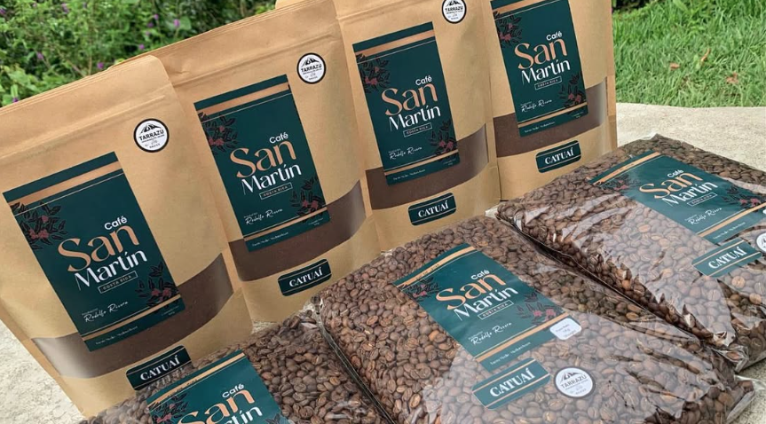
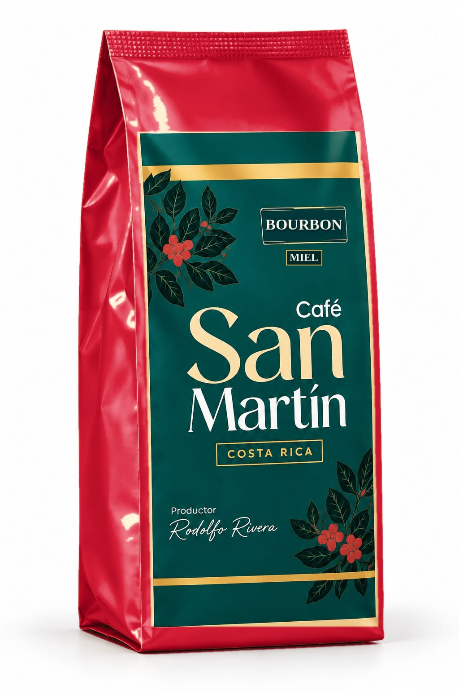

Café de Especialidad
Detrás de cada taza de Café San Martín hay una historia de amor por la tierra y el café.

Ofertas y Promociones Vigentes
Novedades

NUEVO
Bourbon Miel
Edición de tiempo limitado
Procesado con el método miel, que conserva parte de la pulpa del grano
durante el secado y le da un dulzor natural único.
Panela
Durazno
Miel de abeja
Ver en el catálogo

NUEVO
Bourbon Miel
Edición de tiempo limitado
Procesado con el método miel, que conserva parte de la pulpa del grano durante el secado y le da un dulzor natural único.
Panela
Durazno
Miel de abeja
Ver en el catálogo
Cómo preparar tu café
Saca el máximo sabor a cada grano en casa
Fácil
Chorreador
El método tradicional de Costa Rica. Resalta los sabores dulces y deja una taza limpia.
- Molienda: Media
- Proporción: 15 g por cada 250 ml
- Tiempo: 3 a 4 minutos
Fácil
Prensa francesa
Da una taza con más cuerpo, ideal para cafés con notas a chocolate como el Catuaí.
- Molienda: Gruesa
- Proporción: 17 g por cada 250 ml
- Tiempo: 4 minutos
Intermedio
Espresso
Concentrado e intenso. La base para capuchinos y lattes.
- Molienda: Fina
- Proporción: 18 g para 36 ml
- Tiempo: 25 a 30 segundos
Agua entre 90 y 96 °C
Muele el café justo antes de prepararlo
Guárdalo en un frasco hermético